# Julia code
julia --project=.Package Walkthrough: TRU-OLS


For the YouTube livestream schedule, see here
For screen-shot slides, click here
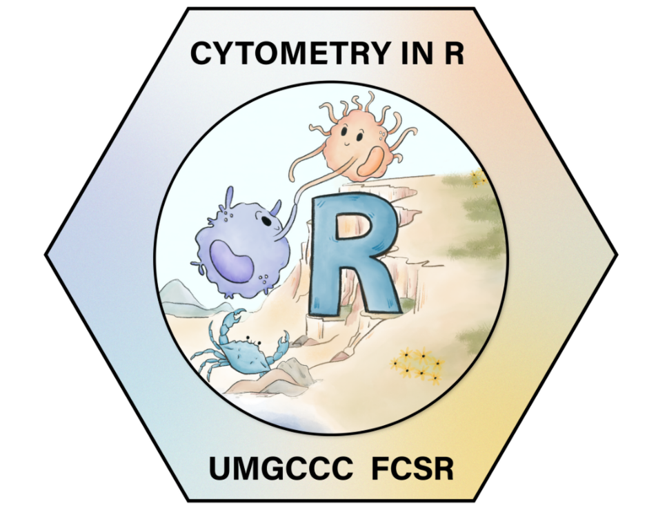
Background
There are different ways to unmix spectral flow cytometry data. TRU-OLS is one of them, with the methodology behind the approach explained in this 2025 Cyto Part A paper by Ryan Kmet and David Novo.
Logistics
It is implemented in the Julia programming language. Since this is a Cytometry in R course (and I have no plans to implement a Cytometry in Julia course), we will need to figure out a few logistics first. Namely…
- We will need to retrieve the information we need for unmixing from the raw .fcs files in R
- Hand off these intermediate outputs to Julia (either directly or via the
JuliaCallR package) - After unmixing has been carried out, return these outputs to R, and integrate them back into a properly formatted .fcs file
In this walk-through, we will see a basic example of how this can be implemented, leveraging what we know about the R programming language, plus select targeted google searches, to allow us to pass what is needed to Julia, and then get the returned objects back into R.
If we manage to get these three goals accomplished, we will be able to unmix our data using TRU-OLS, and end up will properly set up .fcs files that can be opened with any flow cytometry software.
Method
Note
The following notes about TRU-OLS arose as part of a Cytometry Discord discussion thread within the “data” channel on August 25, 2025 discussing the released paper. As a community “Journal Club”, some important details may have been missed. All screenshots (and badly hand-scrawled notes) originate from the paper figures. The thread is reposted below with minimal editing.
Background: As we increase number of markers in the unmixing matrix, variance contributes to increasing amounts of noise around the negative population. This was illustrated recently in the Mair and Mage paper. For the unstained sample iteratively unmixed up to 40 markers, you can see how this spreads out. 1/n
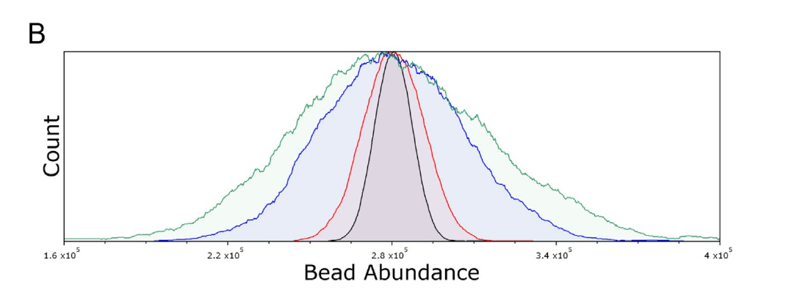
The way TRU-OLS seems to work relies on the unmixing controls (single color and unstained). Single colors are used to provide the signatures for the full matrix. The unstained is then unmixed against this matrix. A cutoff point is then set at the 99.5% (very right edge) of the spread. This cutoff is used to help determine for individual cells what fluorophores are present before downsizing the matrix to only the relevant fluorophores. 2/n

Consequently, for the full-stained sample, each cell is initially unmixed. If the value is below the cutoff set by the unstained spread, the marker is presumed negative and removed from the re-unmix matrix. Once all the “irrelevant” fluors are removed, the full-stained cell is reunmixed with the remaining fluorophore matrix. 3/n
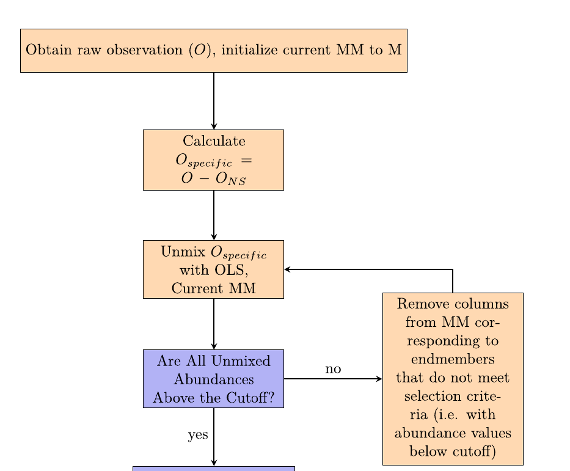
Finally, the “irrelevant” fluorophores on the re-unmixed cell can be either set to 0, or reorganized into the original spread of the unstained negative. 4/n
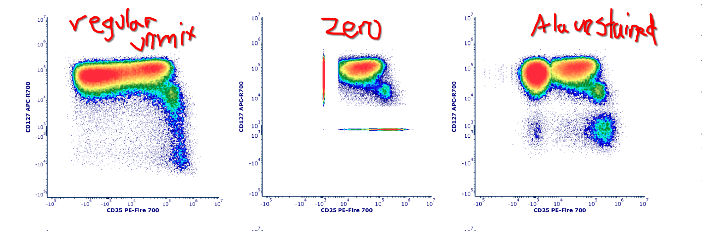
When enumerating how many markers were retained for the individual re-unmixing, we see following distribution of “smaller matrices used”. 5/n:
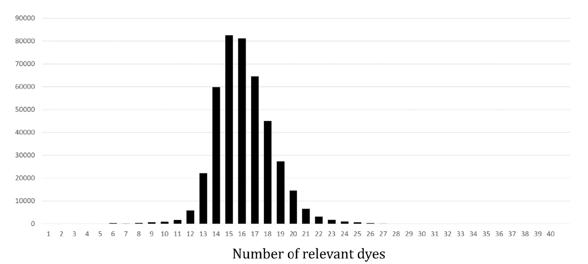
In addition to removing all events below the cutoffs, the removal of “irrelevant” markers results in the Bermuda zone between the cutoff and the bright population to also clean up when comparing between regular OLS unmixing and the TRU-OLS approach. 6/n.
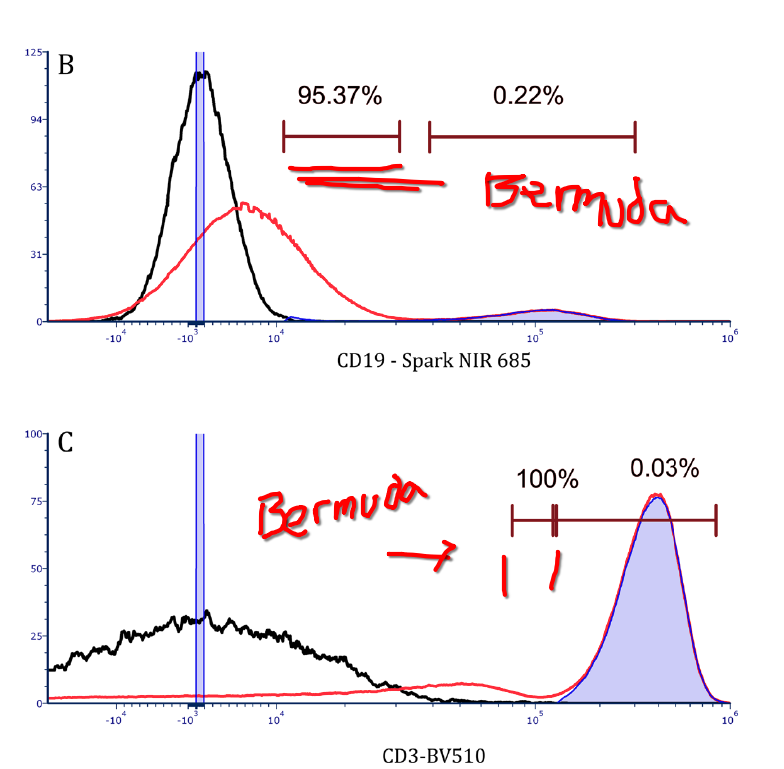
The approach makes the most difference on cells where there wasn’t much marker co-expression to begin with. For the heavily co-expressed cells, everything is kept, and their uncertainty still persist as spread. 7/n.
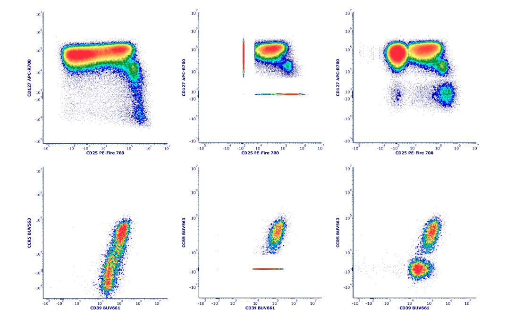
My outstanding questions is one, if we are depending on the positive peaks remaining in the same place based on the reference, how does this work for cells across multiple individuals in practice. Likewise, I will need to play around with more dim population data before I can vouch haven’t also thrown the baby out with bathwater. With that said, I like it.
Walk-through
Setup
Before getting started, let’s make sure that both the Julia programming language is installed on our local computer, and then proceed to download TRU-OLS and make sure it is active in our local environment.
Installing Julia
Since how you install Julia will vary depending on your computer operating system, please see these instructions. Once Julia has been successfully installed, please return and proceed to the next step.
Downloading TRU-OLS
As of the moment, TRU-OLS is available via GitHub. Consequently, we are able to download it similar to any GitHub-based code to make it available on our local computer. To simplify the installation process (and allow us to make any necessary changes should we encounter dependency version issues later on), I recommend going ahead and forking the repository. This additionally helps the authors track usage and community interest in their work.
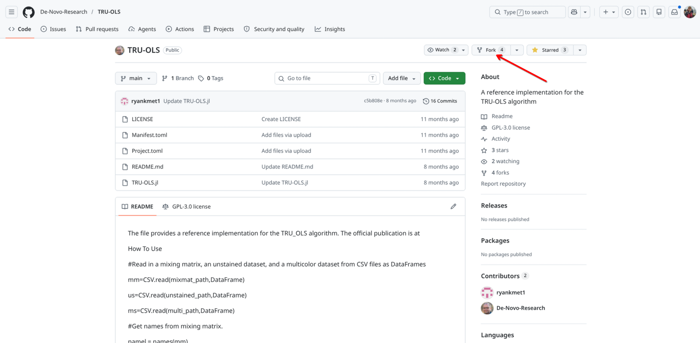
After forking the project to your own GitHub account, copy the url, open up Positron, and select the drop-down option on the upper-right to create a New Folder from Git.
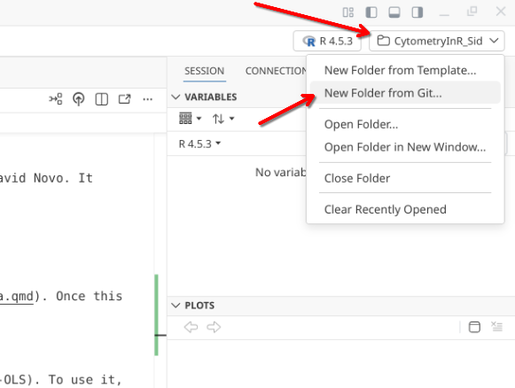
Paste in the url to your forked version of TRU-OLS, and proceed with the download.

Following completion, open the new project folder inside Positron.
Activating TRU-OLS
To begin using TRU-OLS, just like any R package, we are going to need to make sure the required dependencies are installed. These are documented inside the “Manifest.toml” file. To get started, proceed to your terminal tab and run the following line of Julia code
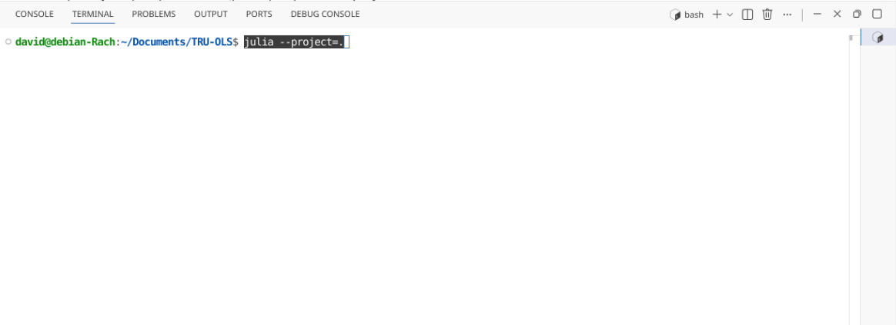
The Julia splash screen will then be displayed within the terminal window
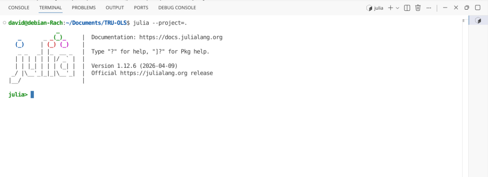
Now that Julia is active in our terminal, we will see julia> appearing on each line. Proceed to type (or paste) the following code to commence the installation of the required dependencies.
# Julia code
using Pkg
Pkg.instantiate()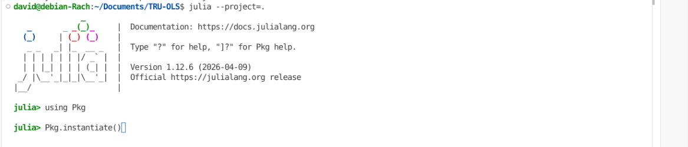
The installation of the required Julia packages will then proceed, with the status of the various steps (including installation and pre-compiling) being displayed

In my attempt to install the dependencies, I ended up with an error when installing the CSV package.
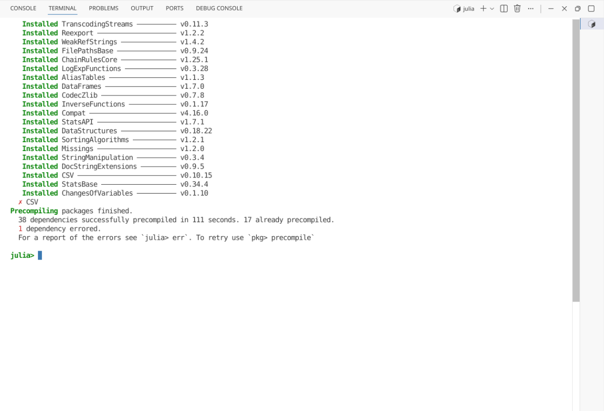
# Julia code
err
Similar to when we encounter errors installing an R package, we can apply those same troubleshooting skills in this context. First glancing at the “Manifest.toml” file, the original manifest list the Julia version 1.8.5. In my case, my installed Julia version was more recent (1.12.6), suggesting we likely have a dependency clash due to the older version listed in the manifest.
I decided to re-run Pkg.instantiate(), and as we would anticipate, I still retrieved the previous error
# Julia code
using Pkg
Pkg.instantiate()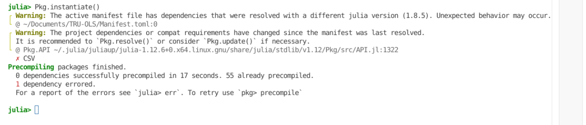
However, in this case, the message output suggested the use of Pkg.resolve(), which I next attempted
# Julia code
using Pkg
Pkg.resolve()
Based on the Positron highlighting syntax, this resulted in a few package additions and deletions. On re-running Pkg.instantiate(), the CSV package successfully installed.
Checking the Source control tab in the actions bar, and clicking on the “Manifest.toml” file, we can see the different updates that were effectuated by Pkg.resolve()
Once this was done, I saved my changes to the files, staged them to version control, wrote a short commit message, before pushing everything from my local fork back to GitHub. This prevents the need to repeat the troubleshooting process next time I needed to set TRU-OLS up on another computer in the future.
Dataset
For this walkthrough, the spectral flow cytometry .fcs files being used were generated in 2025 as part of the yearly 5-day training workshop here at UMGCCC FCSR. The panel consisted of 5 markers (CD45, CD3, CD4, CD8 and Viability). This panel was used to stain mouse splenocytes, which were then acquired on a 5-laser Cytek Aurora.
Loading FCS files to GatingSet
With both Julia and TRU-OLS now installed, switch back to the R project folder that you will be primarily be working in for unmixing.Once there, you will need to load your unmixing controls and full-stained samples into a GatingSet.
As always, start by attaching to your local environment the required R packages via the library() call
library(flowWorkspace)As part of improvements to flowWorkspace, some behavior of
GatingSet objects has changed. For details, please read the section
titled "The cytoframe and cytoset classes" in the package vignette:
vignette("flowWorkspace-Introduction", "flowWorkspace")library(flowGate)Loading required package: ggcytoLoading required package: ggplot2Loading required package: flowCoreLoading required package: ncdfFlowLoading required package: BHlibrary(dplyr)
Attaching package: 'dplyr'The following object is masked from 'package:ncdfFlow':
filterThe following object is masked from 'package:flowCore':
filterThe following objects are masked from 'package:stats':
filter, lagThe following objects are masked from 'package:base':
intersect, setdiff, setequal, unionlibrary(purrr)
library(JuliaCall)Next off, specify the storage location of the .fcs files, and also the location of the folder you want any unmixed fcs files to be saved to.
#StorageLocation <- file.path("course", "community", "TRU-OLS", "data")
StorageLocation <- file.path("data")
#OutputLocation <- file.path("course", "community", "TRU-OLS", "outputs")
OutputLocation <- file.path("outputs")Proceed to load the identified .fcs files into a GatingSet object
fcs_files <- list.files(StorageLocation, pattern=".fcs",
full.names=TRUE, recursive=TRUE)
SFC_cytoset <- load_cytoset_from_fcs(fcs_files,
truncate_max_range=FALSE, transformation=FALSE)
SFC_GatingSet <- GatingSet(SFC_cytoset)As we will be working with raw .fcs files for the unmxing process, we do not need to transform, as we need signatures retrieved from the underlying data to appear in their normal shapes.
I recommend then using subset() on the GatingSet, placing the single-color and unmixing controls into their own GatingSets, and repeating the process for the full-stained samples. This ensures we only retrieve signatures from the single-color controls, and that only the full-stained samples are unmixed.
# pData(SFC_GatingSet)
FullStain_GS <- subset(SFC_GatingSet, name == "Full-Stained2_scatter.fcs")
Unstained_GS <- subset(SFC_GatingSet, name == "Unstained (Cells)_scatter.fcs")
UnmixingControl_GS <- subset(SFC_GatingSet, name != "Full-Stained2_scatter.fcs" &
name != "Unstained (Cells)_scatter.fcs")Signature Matrix
To facilitate this example, we will use the Luciernaga_SingleColors() function from the Luciernaga package to retrieve the signatures from our single-color controls. For more information, please see the vignette.
# remotes::install_github("DavidRach/Luciernaga")
library(Luciernaga)
# Define the primary detectors
UnmixingPanel <- data.frame(
Fluorophore = c("BV510-A", "BV605-A", "Spark Blue 550-A", "7-AAD-A", "Alexa Fluor 700-A"),
Detector = c("V7-A", "V10-A", "B3-A", "YG4-A", "R4-A"))
# Define what brightness percentiles to include
ThePanelCuts <- UnmixingPanel |> select(-Detector) |> mutate(From=0.8) |> mutate(To=1)
# Extract the signatures
SCs <- map(.x=UnmixingControl_GS, .f=Luciernaga_SingleColors, sample.name="TUBENAME",
removestrings=c(".fcs", "PD_AD_"), subset="root", PanelCuts=ThePanelCuts, stats="median", Verbose=FALSE,
SignatureView=TRUE) |> bind_rows()SCs Fluorophore Ligand UV1-A UV2-A UV3-A UV4-A UV5-A
1 Spark Blue 550 CD3 104.74154 188.68995 420.2939 594.9452 864.0328
2 BV605 CD4 79.07824 158.78110 496.5042 651.8056 871.7632
3 Alexa Fluor 700 CD45 107.72574 219.83228 498.7449 701.1989 1017.6757
4 BV510 CD8 121.22008 231.06911 546.3041 832.8344 1744.4631
5 7-AAD Viability 75.56364 73.38842 87.1750 86.8321 131.5948
UV6-A UV7-A UV8-A UV9-A UV10-A UV11-A UV12-A
1 1495.2246 2580.6736 2742.1285 2186.741 688.7473 312.4049 191.5149
2 1413.0586 2221.1409 1417.7964 7160.168 13850.0234 6889.8103 2858.5405
3 1794.0203 2884.1611 1783.2721 1394.581 432.0355 269.5648 965.4911
4 5374.4111 25075.5771 21001.8184 17206.926 6222.8848 2291.9504 1099.8838
5 224.5899 322.6273 235.3316 536.639 1366.8877 3236.7268 2164.1993
UV13-A UV14-A UV15-A UV16-A V1-A V2-A V3-A
1 140.9085 153.3083 146.2526 135.8367 142.32812 364.2118 472.9013
2 2163.7251 1983.9139 1231.0778 862.3104 4854.59058 6594.5967 5717.8762
3 4073.7609 4180.7432 2346.9130 1820.5828 147.33545 392.1243 528.0650
4 762.3667 746.6266 530.1944 411.1842 229.92508 1765.3419 6732.9707
5 1850.2953 1949.2087 1384.9995 1028.7186 56.95234 187.5039 268.9663
V4-A V5-A V6-A V7-A V8-A V9-A V10-A
1 467.2418 891.2451 3398.5063 10576.7729 6412.2529 4036.4619 3800.3064
2 3200.3501 1989.8629 1320.9020 1545.9777 14717.8267 56108.5410 69693.8047
3 522.9897 805.8846 800.3869 1068.3057 784.9185 531.3835 594.9357
4 14236.3481 37583.2031 39042.7402 53597.5996 37457.4648 23858.7520 24001.5322
5 281.9515 383.5099 349.8906 424.0339 979.9825 2716.0559 11870.2383
V11-A V12-A V13-A V14-A V15-A V16-A B1-A
1 1398.0156 729.8098 610.9025 482.7387 406.1053 211.9564 1727.9603
2 33012.0508 13375.8213 10442.9980 6913.8130 4227.4131 1816.5377 472.0234
3 410.3605 3569.9545 18858.6064 13525.6689 7742.5754 3852.9854 485.0185
4 8262.2681 3854.7830 2837.6615 1933.1819 1358.4150 576.0975 587.8901
5 19976.5449 13250.9321 11821.9834 9180.0054 6730.8584 3196.4229 147.2456
B2-A B3-A B4-A B5-A B6-A B7-A B8-A
1 11803.6841 31791.0898 13055.8618 9729.2339 5960.7681 3127.5720 2222.0243
2 442.6214 540.6498 738.8925 2996.0658 2870.6008 2005.9507 1302.9653
3 469.6182 560.3932 305.5835 339.6832 244.6713 152.8191 210.2808
4 554.4593 658.5273 372.5866 380.8456 288.1743 165.7359 140.0763
5 155.3411 214.6584 1326.2528 5897.7673 20978.9561 54340.7949 46198.2520
B9-A B10-A B11-A B12-A B13-A B14-A
1 2092.9392 1235.8806 801.18732 685.7439 506.45784 602.38147
2 1045.8303 616.8634 411.57971 301.7630 210.75192 234.18474
3 1098.3724 2552.8210 1888.99933 1150.0874 777.24994 927.87350
4 146.0795 108.9569 69.67178 74.3706 55.30247 71.59775
5 49241.4121 30504.1377 19612.47266 17056.9932 12517.82764 13991.46777
YG1-A YG2-A YG3-A YG4-A YG5-A YG6-A
1 728.4496 412.28871 294.84369 225.3277 122.32074 123.49529
2 4960.2808 23393.29395 23929.44727 15121.0571 9115.67529 6222.96021
3 173.3573 88.36777 109.43902 267.5920 776.15417 5119.80396
4 193.2470 99.99137 92.44199 164.6935 92.89421 81.73549
5 3614.0844 13031.28711 40427.65039 124554.5195 101246.96484 93211.57812
YG7-A YG8-A YG9-A YG10-A R1-A R2-A
1 159.5041 86.86105 60.32009 49.90587 59.36887 65.15396
2 6832.3105 2701.12439 1620.54364 951.89786 127.81407 119.96352
3 29223.2451 12844.04395 7387.60693 4942.44336 370.45784 4182.69580
4 126.0765 67.43141 54.69088 66.03951 69.02694 71.98460
5 112102.7891 51718.50781 38361.86328 23770.70703 1828.64563 2459.72717
R3-A R4-A R5-A R6-A R7-A R8-A
1 58.51100 53.43020 36.55869 50.95368 65.37681 22.83324
2 107.51331 96.55773 79.32631 83.67997 79.76941 45.79163
3 37749.57227 103404.82812 94201.42188 46773.15820 44290.40430 25535.98047
4 76.35984 66.68982 53.12717 64.87876 73.56101 36.30670
5 2500.10327 1926.56720 1511.25427 1097.58972 1131.22571 595.57352Let’s also visualize the signatures against the reference signatures for the respective fluorophores to ensure that the retrieved signatures are appropiate.
plots <- map(.x=UnmixingControl_GS, .f=Luciernaga_SingleColors, sample.name="TUBENAME",
removestrings=c(".fcs", "PD_AD_"), subset="root", PanelCuts=ThePanelCuts, stats="median", Verbose=FALSE, SignatureView=TRUE, returntype="plots")plots[[1]]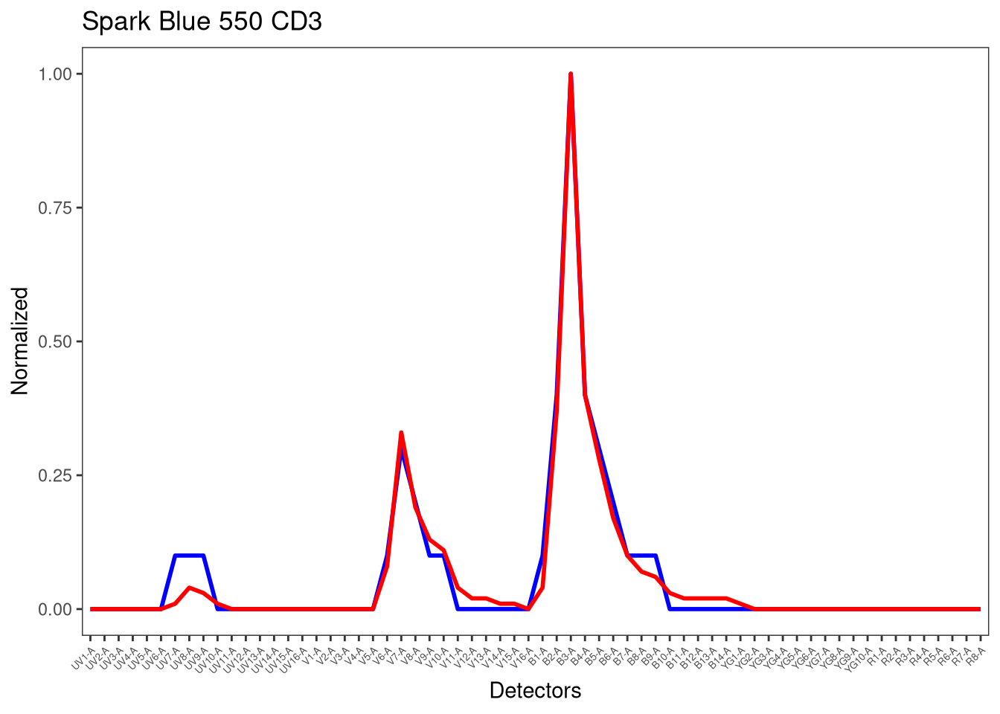
[[2]]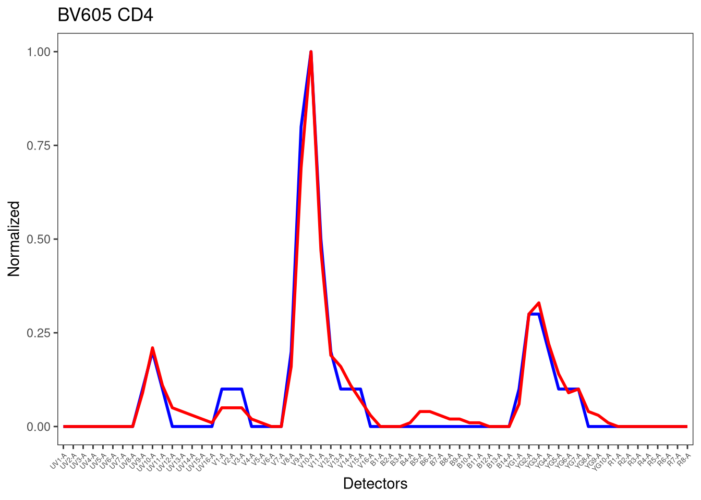
[[3]]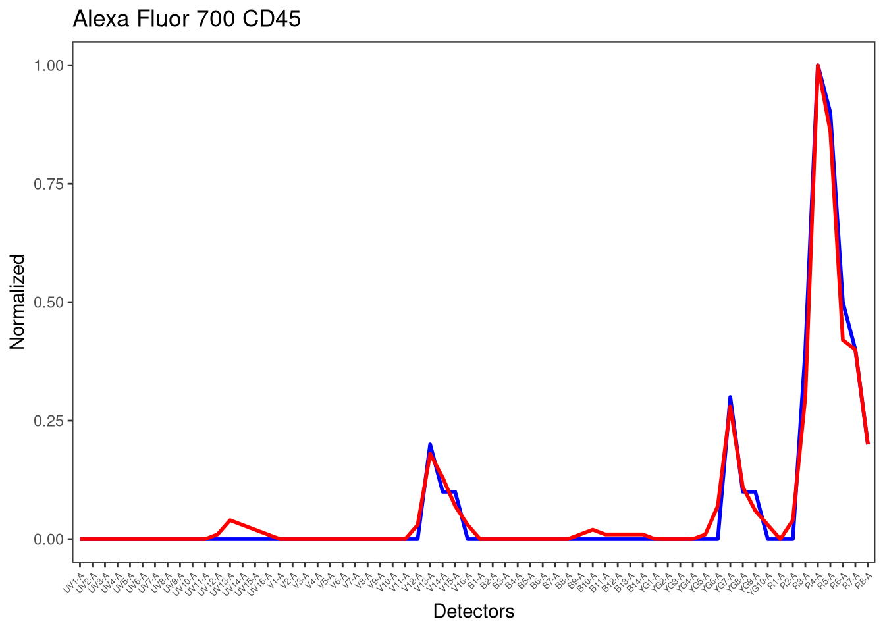
[[4]]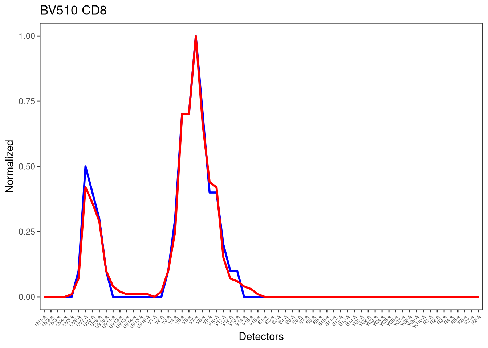
[[5]]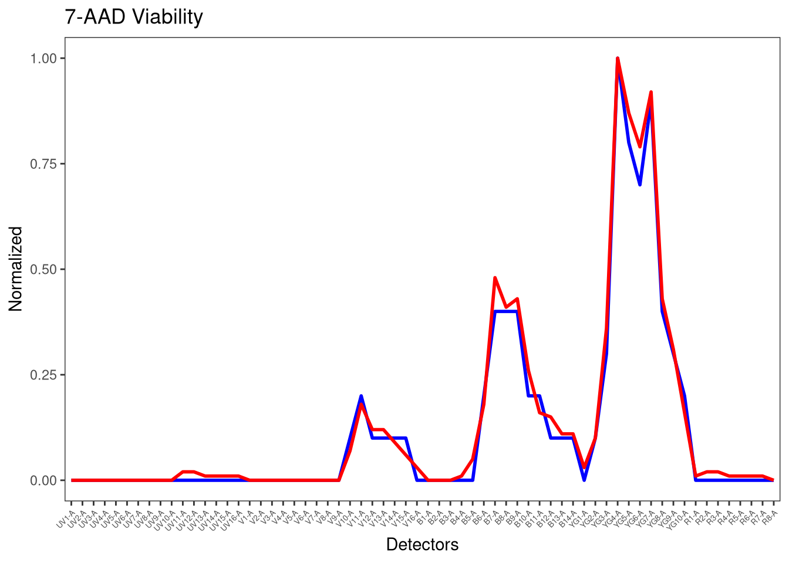
In this case, the signatures are close enough to the reference that we can proceed (the rough edges are likely result of the datasets single-color unmixing controls being severely downsampled in order to pass the GitHub size limits)
OLS-Unmixing via Luciernaga
Since we may be interested in comparing how TRU-OLS unmixing differs compared to regular OLS unmixing (and since we have already generated the needed inputs), lets proceed to unmix via Luciernaga and generate an .fcs file to our designated outputs folder for later.
TheSampleName <- c("TUBENAME")
UnmixSuccess <- map(.x=FullStain_GS, .f=Luciernaga_Unmix,
controlData=SCs, sample.name=TheSampleName, addon="_Luciernaga_Unmixed", subset="root", removestrings="fcs", outpath=OutputLocation, PanelPath=UnmixingPanel, Verbose=TRUE)After removestrings, name is Full-Stained2TRU-OLS Unmixing
Within the TRU-OLS README, we are given a few line of codes with instructions on how to run
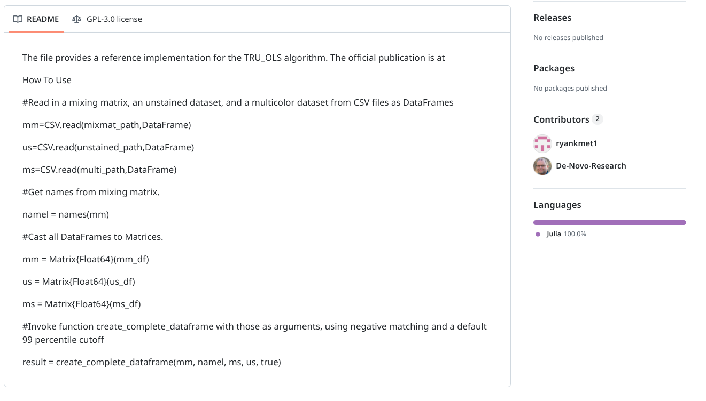
The main inputs are three csv files that are read into JUlia, mixmat (the signature matrix of the single-colors), unstained (the cleaned up exprs output for the unstained sample), and multi (the cleaned up exprs outputs for the full-stained sample). The names of the fluorophores are then subsequently retrieved from the mixmat file.
These data.frames are then all converted to matrices, before being passed off to create_complete_dataframe() function, which runs using the default parameters.
From previous function building examples, we have enough familiarity with the flowWorkspace package to figure out how to retrieve and clean up the exprs() output in R to fulfill the inputs needed for unstained and full-stained samples to be passed to Julia. We can also use Luciernaga_SingleColors() to generate the mixmat data.frame of fluorophore signatures.
After attempting (and failing) to pass from an R code chunk to a Julia code chunk, I found the implementable approach was to write the data.frames to .csv files, and then via JuliaCall package run Julia commands within the R function to carry out the above README suggested steps, and save the output as a .csv file that could be read back into R.
The main thing needed was to provide the correct file path to the TRU-OLS.jl file with the corresponding Julia code.
#' Implements TRU-OLS unmixing in Julia, via the JuliaCall R package.
#'
#' @param mixmat The signature matrix
#' @param unstained The cleaned up exprs of the unstained
#' @param fullstained The cleaned up exprs of the full-stained
#' @param TRUOLSPATH File.path to the TRU-OLS.jl file
#'
#' @importFrom JuliaCall julia_setup julia_command
#' @importFrom utils read.csv write.csv
#'
TRU_OLS_Julia <- function(mixmat, unstained, fullstained,
TRUOLSPath="/home/david/Documents/TRU-OLS/TRU-OLS.jl") {
library(JuliaCall)
write.csv(mixmat, "mixmat.csv", row.names=FALSE)
write.csv(unstained, "Unstained.csv", row.names=FALSE)
write.csv(fullstained, "FullStained.csv", row.names=FALSE)
julia_setup()
julia_command('import Pkg; Pkg.add(["CSV", "DataFrames", "LinearAlgebra", "StatsBase", "FileIO", "FCSFiles"])')
julia_command('using CSV, DataFrames')
julia_command('mm = CSV.read("mixmat.csv", DataFrame)')
julia_command('us = CSV.read("Unstained.csv", DataFrame)')
julia_command('ms = CSV.read("FullStained.csv", DataFrame)')
julia_command('namel = names(mm)')
julia_command('mm = Matrix{Float64}(mm)')
julia_command('us = Matrix{Float64}(us)')
julia_command('ms = Matrix{Float64}(ms)')
julia_command(sprintf('include("%s")', TRUOLSPath))
julia_command('result = create_complete_dataframe(mm, namel, ms, us, true)')
julia_command('CSV.write("result.csv", result)')
result_r <- read.csv("result.csv", check.names=FALSE)
return(result_r)
}With the “R to Julia and back to R” hand-off operational, the main thing left is to provide the function infrastructure in R needed to gather the required inputs, and then once the outputs are received, correctly package them back into a new .fcs file. I modified the existing function infrastructure for Luciernaga_Unmix() used for the OLS unmixing example above, but switching out the OLS unmixing with the TRU_OLS_Julia() function we just wrote.
#' @param x An interated-in full-stained raw .fcs file needing to be unmixed
#' @param SCs The fluorophore signature matrix generated via Luciernaga_SingleColors
#' @param Unstained_GS The GatingSet containing the raw unstained fcs file
#' @param sample.name The keyword containing the fcs file name
#' @param removestrings A list of values to remove from name
#' @param Verbose For troubleshooting name after removestrings
#' @param addon Additional addon to append to the new .fcs file name
#' @param subset A gating hierarchy level to sort cells at, expression values retrieved
#' from these
#' @param outpath The return folder for the .fcs files
#' @param PanelPath Location to a panel.csv containing correct order of fluorophores
#' @param returnType Whether to return "fcs" or "flowframe"
#' @param TRUOLSPATH File.path to the TRU-OLS.jl file
#'
#' @importFrom JuliaCall julia_setup julia_command
#'
TRUOLS_Unmix <- function(x, SCs, Unstained_GS, sample.name, removestrings,
Verbose, addon, subset="root", outpath, PanelPath, returnType="fcs",
TRUOLSPath = "/home/david/Documents/TRU-OLS/TRU-OLS.jl"){
# File Name Clean Up
if (length(sample.name) == 2){
first <- sample.name[[1]]
second <- sample.name[[2]]
first <- keyword(x, first)
second <- keyword(x, second)
name <- paste(first, second, sep="_")
} else {name <- keyword(x, sample.name)}
name <- NameCleanUp(name, removestrings=removestrings)
if (Verbose == TRUE){message("After removestrings, name is ", name)}
# Normalize the Single Color Signature Matrix (important for final scaling)
if (any(SCs |> select(where(is.numeric)) > 1)){
Metadata <- SCs |> select(!where(is.numeric))
Numerics <- SCs |> select(where(is.numeric))
n <- Numerics
n[n < 0] <- 0
A <- do.call(pmax, n)
Normalized <- n/A
SCs <- bind_cols(Metadata, Normalized)
}
# Formating SingleColors to required mixmat format
SCsM <- t(SCs)
mixmatDF <- data.frame(SCsM)
colnames(mixmatDF) <- mixmatDF[1,]
Ligands <- mixmatDF[2,] |> unlist() |> unname()
mixmatDF <- mixmatDF[3:nrow(mixmatDF),]
mixmat_mat <- as.matrix(mixmatDF)
# Extracting the Unstained Detectors exprs values
Unstained <- gs_pop_get_data(Unstained_GS, "root")
Unstained <- flowCore::exprs(Unstained[[1]])
UnstainedDF <- data.frame(Unstained, check.names=FALSE)
UnstainedDF <- UnstainedDF[!stringr::str_detect(names(UnstainedDF), "FSC|SSC|Time")]
Unstained_mat <- as.matrix(UnstainedDF)
# Extracting the Full-Stained Detectors exprs values
FullStainedCS <- gs_pop_get_data(x, "root")
FullStained <- flowCore::exprs(FullStainedCS[[1]])
FullStainedDF <- data.frame(FullStained, check.names=FALSE)
StashedDF <- FullStainedDF[stringr::str_detect(names(FullStainedDF), "FSC|SSC|Time")]
FullStainedDF <- FullStainedDF[!stringr::str_detect(names(FullStainedDF), "FSC|SSC|Time")]
FullStained_mat <- as.matrix(FullStainedDF)
# Unmixing via the R-Julia wrapper function
TheUnmixed <- TRU_OLS_Julia(mixmat=mixmat_mat, unstained=Unstained_mat,
fullstained=FullStained_mat, TRUOLSPath = TRUOLSPath)
# Returning Time, FSC, SSC columns back in to the unmixed file
TheOrder <- SCs |> pull(Fluorophore)
TheLigands <- SCs |> pull(Ligand)
TheUnmixed <- TheUnmixed[, TheOrder]
TheData <- cbind(StashedDF, TheUnmixed)
rownames(TheData) <- NULL
StandInStashed <- StashedDF |> mutate(Backups=row_number()) |> relocate(Backups, .before=1)
# Handoff to Luciernaga Internal Unmix for the .fcs formatting
new_fcs <- Luciernaga:::InternalUnmix(cs=FullStainedCS,
StashedDF=StandInStashed, TheData=TheData, Ligands=TheLigands)
# Modifying the filename
if (!is.null(addon)){name <- paste0(name, addon)}
AssembledName <- paste0(name, ".fcs")
new_fcs@description$GUID <- AssembledName
new_fcs@description$`$FIL` <- AssembledName
# Sending the file out as an .fcs file
if (is.null(outpath)) {outpath <- getwd()}
fileSpot <- file.path(outpath, AssembledName)
if (returnType == "fcs") {write.FCS(new_fcs, filename = fileSpot, delimiter="#")
} else {return(new_fcs)}
}With both the main function (and the internal R-Julia handoff function) written and active in our environment, we can now proceed to unmixing.
UnmixSuccess <- map(.x=FullStain_GS, .f=TRUOLS_Unmix, SCs=SCs, Unstained_GS=Unstained_GS,
sample.name=TheSampleName, addon="_TRUOLS_Unmixed", subset="root",
removestrings="fcs", outpath=OutputLocation, PanelPath=UnmixingPanel, Verbose=TRUE)
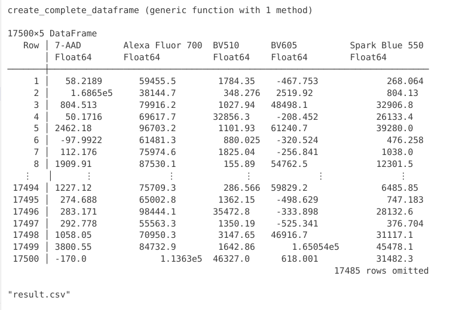
And for a quick sanity check, lets check both the OLS and TRU-OLS files to make sure that the .fcs file formatting worked in practice.
OLS

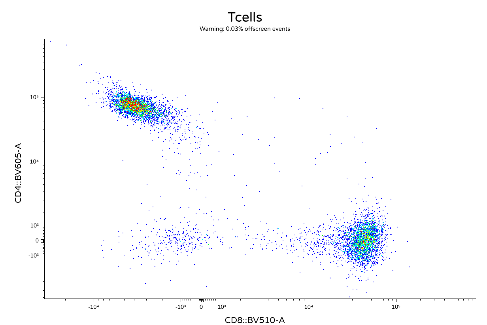
TRU-OLS
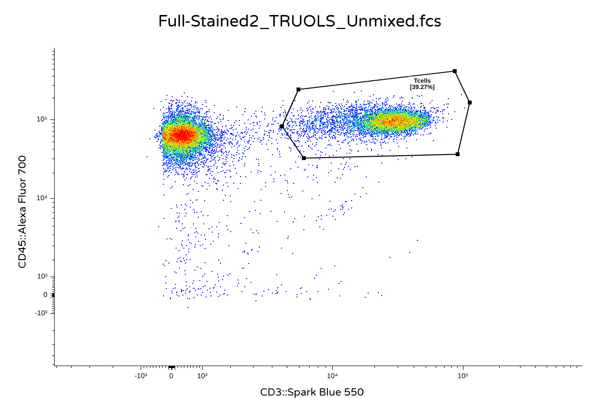
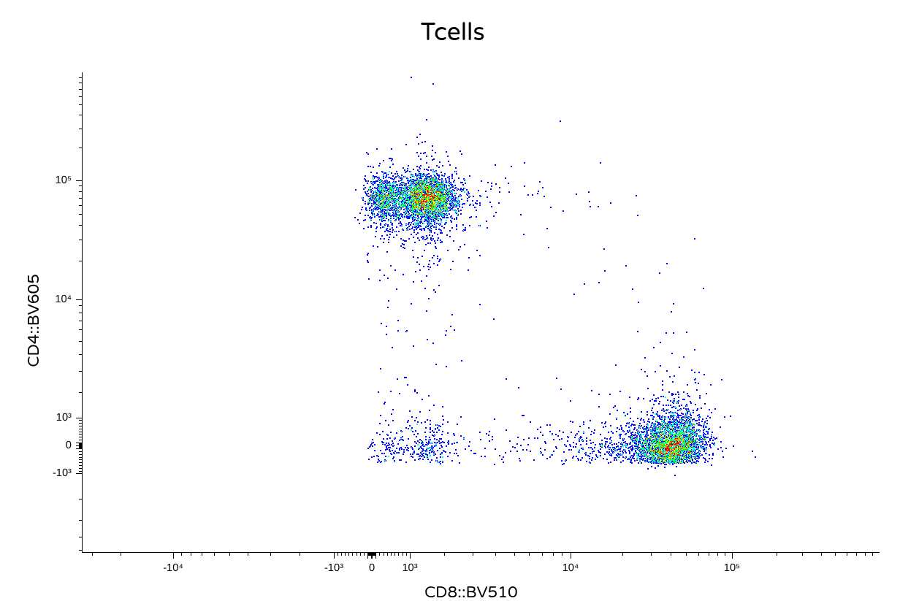
Take Away
In this walk-through, we showcased how to install Julia, activate TRU-OLS within a Positron project folder, and then leverage our existing knowledge about flow cytometry infrastructure as implemented in R via the flowWorkspace package to gather the required inputs. We then wrote a small helper and wrapper function to handoff these inputs to Julia for unmixing, before returning them to R for formatting and export out as .fcs files.
Obviously, this is an initial implementation, and several areas could use additional improvements. This entire process was single-threaded, and could benefit from parallel computing implementation to take advantage of most computers having multiple cores. Additionally, the use of JuliaCall as an intermediate introduces some lag as it gets reactivated on each iteration.
And this has only been checked on Cytek Aurora files, so its likely some changes need to be implemented for other manufacturers.
Regardless, as with all the course code, all the above is AGPL3-0 licensed, and you are free to customize it to your hearts content. We gladly welcome any modifications/contributions to make the above coding examples more robust in the future.
Hopefully, this lowers the barrier of entry, so that anyone interested in exploring how the TRU-OLS method of unmixing might differ for their own datasets is able to gnerate a quick example for evaluation.
Cheers! David

Additional Resources
Reducing Spreading: Removing the Impact of Irrelevant Dyes Improves Unmixed Flow Cytometry Data The original paper describing TRU-OLS, describing the methodology. If you are trying to customize the function further to take advantage of some of the non-default options, worth checking out.
Introduction to Julia for R users A blogpost by Nicola Rennie, covering some of the intro to Julia details that R users would appreciate knowing
Unmixing with Luciernaga The walk-through vignette documenting how to use the Luciernaga unmixing helper functions (still under development)